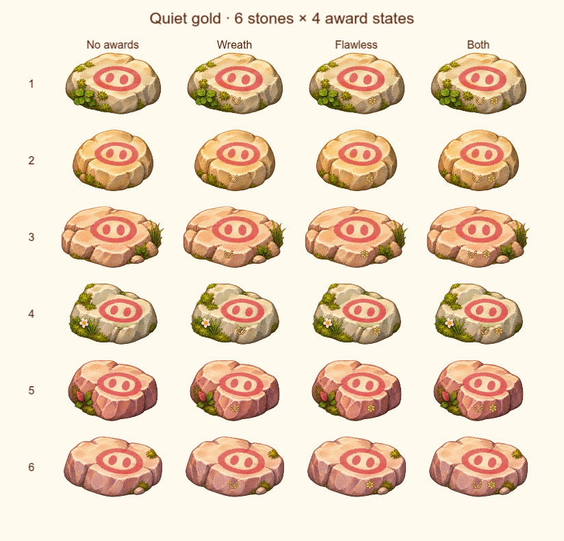
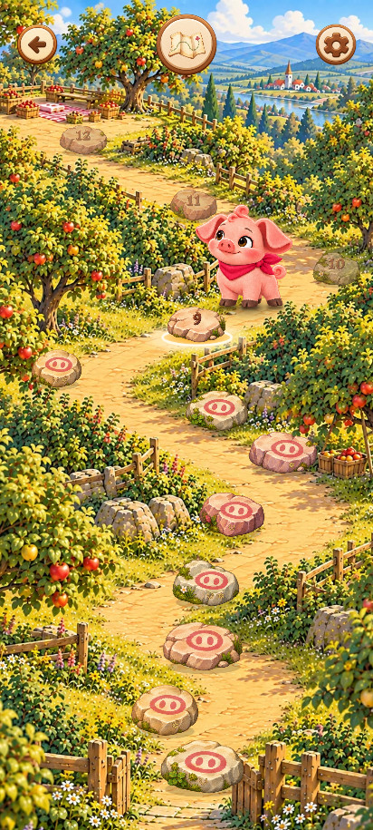
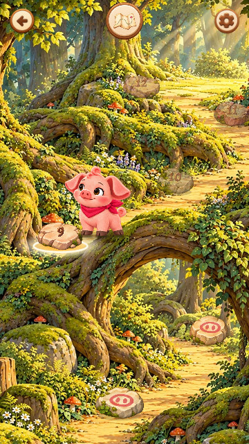
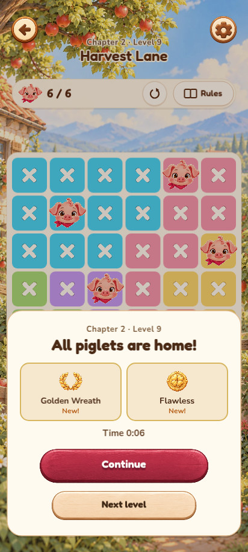
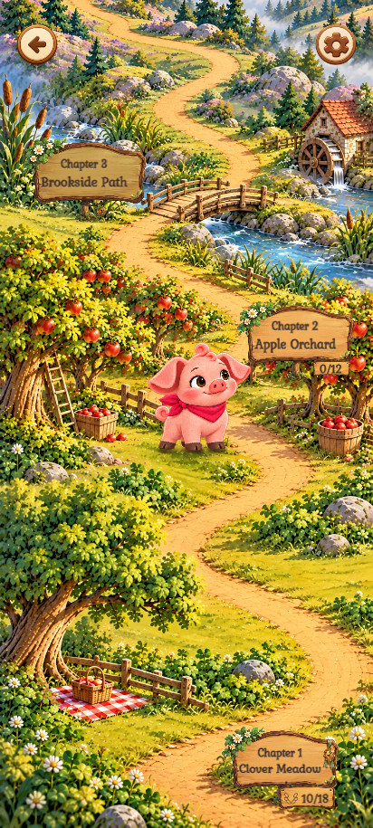
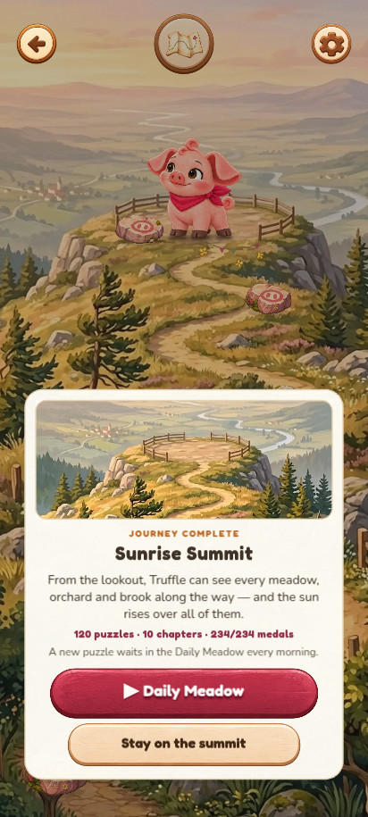
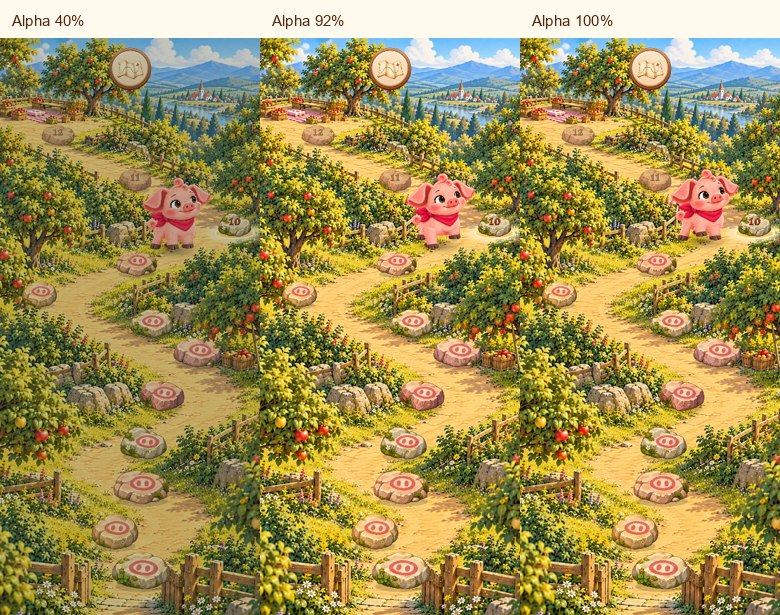

Pigoku · PR #394 · визуальное ревью
Награды на камнях
Небольшие матово-золотые знаки на передней грани камня. Они дополняют нарисованный пятачок, а не обрамляют его, и оставляют главную роль карте и Трюфелю.
Снимки реальной игры · сборка de842c87. Таблица ниже увеличена для проверки деталей, а не заменяет масштаб телефона.
Все камни, все состояния
Шесть дизайнов × нет наград / венок / безупречно / обе. Отсутствующая награда оставляет чистую поверхность. Знаки сохраняют свои левый и правый слоты.

В окружении игры
Настоящий масштаб, фон и поросёнок — без увеличения наград ради скриншота.




Смысл награды — на результате



От главы до финала




Спокойное появление
Три кадра проявления из настоящего перехода после победы. У самих знаков меняется только непрозрачность — без отдельного отскока или увеличения. При уменьшенной анимации они видны сразу.
